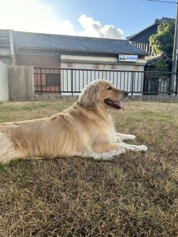

やっぱりなんか「持ってる」ヤツ
今年夏前に、いつも言っているコストコの近くにニトリができました。
実は今までワタクシニトリには行ったことがなかったんですよね〜。
今どきすごい〜と、自分でもびっくりですよ(笑)。
そんで、「ちょこっと見に行ってみようか」程度の軽い感じで
ふらりと行ってみました。
ダンナも休みを取っていたしね。
そしたら、ハルが小学生の頃所属していた「知多サッカークラブ」では監督、
そして「FC Himawari 2007」でも大変お世話になった
増田清顧問(現在はwyvern FCのアドバイザー)にばったり遭遇〜 !
お互いに「ここにはよく来るんですか ? 」「いえ、今日が初めてです。」
と、ホントにお互い偶然なことにびっくり。
実際・・・ものすごくお世話になった人とか
毎日会うくらい仲良くしていた人だって、
環境が変わっていけば疎遠になっていったりもするもので
年齢と共にステージが変わっていく学生なんて特に、
思い出と共に「ああ、そんな方もいらっしゃったねぇ」と
時々思い出すような人が、なんと多いことか !
そんな中、
小学校に上がりたての、
海のものとも山のものとも分からないわが家のおバカ男子に
「ぜひこのまま破天荒に育ててください」とエールを送ってくださり、
難しいジュニア・ユースの時代を遠く、近く見守ってくださった恩師に
甲府の迷宮で彷徨い、出口を探して新しい環境を求めている今出会うなんて。
それも、ドイツに出発する1週間前、たまたま本人が地元に戻っている今 !
コレはぜひドイツに発つ前に、挨拶に行かせたいとご都合を伺ったところ
「wyvernのグランドにいるから練習しにいらっしゃい」ですってよ !
まーじーでーすーかー !!
増田顧問に(現在はwyvern FCのアドバイザー)見てもらえるのーー !?
今まで何度も思いました。
「なんか、コイツは持ってんな ? 」(・・・親バカでハズいケド)
いつも、困って悩んでいるときに誰かが手をさしのべてくれる。
FC Himawari 2007に入団することになったときも、
偶然が重なって、ちびの頃からお世話になっていたコーチから
お話をいただくことになったし、
Himawariの菱川監督には大変にかわいがってもらい、信頼もされ
のびのびと自由にやらせてもらえたおかげで、
ずいぶんのびしろと可能性を広げてもらいました。
高校への進学も、菱川監督と懇意の、東海大甲府のコーチが
たまたま公式戦を見にいらして「是非ウチの高校に欲しい」と
言ってくださった(←のは実は後で知った 笑)そうです。
不思議な縁でここまで導かれてきた感じが、ヤツの運の良さを感じるんだよね・・・。
ハル自身は決して勤勉でもストイックでもない、
言われなけりゃやるべきこともサボっちゃうし、
自分で言ったことすら実行できない、だらしないふつーの高校生だけど(汗)、
時々、「神様に愛されてる ? 」って、真剣に思ってしまうことがあります。
・・・いや、自分の子どもなのに、ナニちょーし乗ってる ? 自分(爆)。
ちょっとくらい運がいいくらいで、調子に乗ってる場合じゃないデスよ(笑)。
宿命とか運命なんてものは自身で切り開いていくものだと、
基本的には思っています。ただし・・・
ハルは周りの人に恵まれていると、コレは本気で思います。
おごらず、いつも謙虚で、
自分に関わってくださる人たちへの感謝を常に忘れずに・・・
信じる道をまっすぐに進んで行って欲しいと思っています。

ひましゃんもしんじるみちをつきしゅしゅむでしゅよ !
おいしいおやつはきっとひましゃんがげっとしゅるでしゅ !